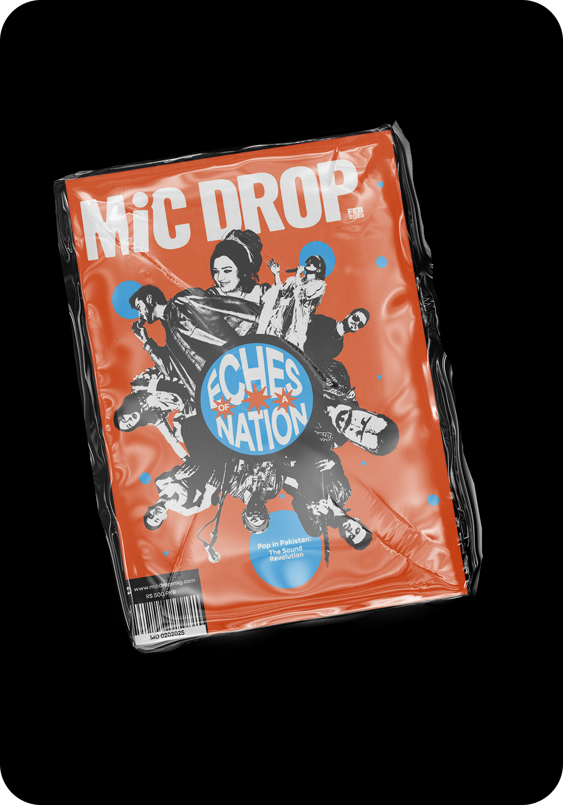

Micdrop Magazine
Centering South Asian artistry in editorial design
Micdrop is a print magazine celebrating South Asian musicians, producers, and visual artists whose work sits at the intersection of tradition and contemporary sound. The project started from a simple observation: South Asian talent is everywhere in global music culture, but rarely centered on its own terms in editorial design.
Over eight weeks I designed the first issue end to end — cover language, typographic system, grid, photography treatment, and the feature spreads that had to hold them all together. The goal was editorial confidence without spectacle: let the work lead, and design in service of voice.

Problem Space
South Asian artists get framed as crossover curiosities rather than primary subjects. I audited how music media covers them, and the same two failure modes came up again and again.
- The exoticizing treatment. Saturated color, ornamental type, a decorative border — culture rendered as texture, with the artist's actual work pushed down to the caption.
- The flattening treatment. The artist gets folded into a generic global playlist aesthetic, where nothing on the page distinguishes them from anyone else in the issue.
Neither approach gives artists the editorial weight a Western headliner gets by default. One turns heritage into decoration. The other pretends it isn't there.
Problem space — a tearsheet grid of six to eight existing magazine spreads, annotated to mark the exoticizing and the flattening treatments
The Insight
The decoration is the tell. Every spread I audited signaled culture through ornament — a border, a motif, a display face borrowed from a script it didn't understand. The design was doing the explaining, and the moment design explains a culture, it has already positioned that culture as the thing needing explanation.
Rhythm is the alternative. South Asian music is organized by cycle and stress rather than by ornament — the percussion keeps a measure that the melody plays against. That is a structural idea, not a decorative one, and structure is exactly what an editorial grid is made of.
So the bet was to build the culture into the skeleton of the magazine instead of its surface. If the system carries it, the pages don't have to announce it.
The insight — a diptych comparing an ornament-led spread against the same content set in the rhythm-led grid
Solution
A grid that keeps time. Micdrop runs on a modular grid with a fixed vertical measure, and each feature is set to a repeating stress pattern — a long opening spread, two short ones, a full-bleed image, repeat. Read the issue front to back and it moves with a cadence you feel before you notice it.
The grid system — the column structure and vertical measure overlaid across three consecutive spreads
Type carries the voice. A high-contrast serif for headlines, set large and given room, paired with a neutral grotesque for body copy that never competes with an artist's words. Pull quotes break the grid deliberately, the way a phrase breaks a measure.
The typographic system — the full type scale with headline, deck, body, pull quote, and caption specimens
Photography holds the subject. High-contrast black and white throughout, shot tight, with the artist's gaze meeting the reader. No props, no cultural set dressing. The identity is in the person, not the backdrop.
Photography treatment — the same portrait in a conventional color-and-props treatment beside the Micdrop black and white crop
Process
I started with the artists, not the layouts. In conversations with musicians and cover artists working in this space, one question ran through all of them: when has a magazine gotten you wrong? Every answer described a design decision. The border. The font. The photo where they were asked to hold an instrument they don't play.
That gave me the constraint the whole system is built on: nothing on the page may explain the artist to the reader. The interview does that.
Research — interview synthesis board, quotes clustered into the failure patterns that became design constraints
From there the issue was built spread by spread and printed constantly. Screen lies about scale, and it lies about weight — a headline that reads confident at 100% zoom reads shouty at trim size. Every round of proofs went to the printer, got cut to size, and came back with notes.
Process — flat lay of the printed proofs in sequence, showing the type scale tightening across iterations
The Design System
Restraint is the system. Two typefaces, one grid, one photographic treatment, and a palette that never leaves black, paper white, and a single warm ink reserved for pull quotes and folios.
The cover language is the strictest part of it. Full-bleed portrait, masthead behind the subject's head, cover lines locked to the baseline grid. Every issue would look like Micdrop and no issue would look like the last one, because the only variable is the artist.
The system — masthead lockup, cover line grid, and folio treatment shown as component specimens
Cover language — three cover variations proving the system holds across different portraits
Reflection
Restraint reads as respect. The hardest work here was subtraction. Every element I removed made the artist more present on the page, and every ornament I was tempted to add would have made the design the subject instead.
The second lesson was about the printer. A system that only works at 100% zoom is not an editorial system, it is a mockup. Printing early and often changed more design decisions than any critique did.
Outcome
A cohesive first issue that reads as a statement of intent — a publication with a point of view, not a mood board. Micdrop proved that editorial design can center South Asian artistry with the same rigor and restraint applied to any major music publication.
Final issue — the printed magazine photographed open across several spreads, plus the cover